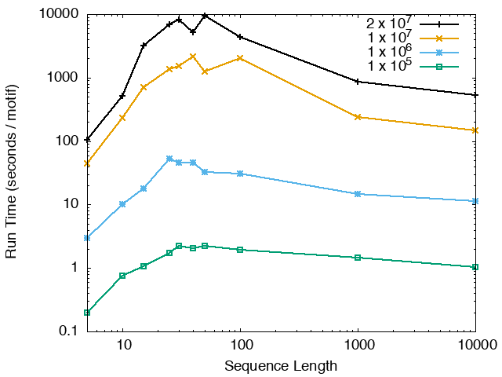
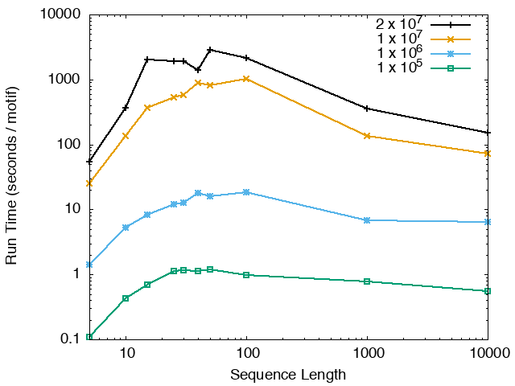
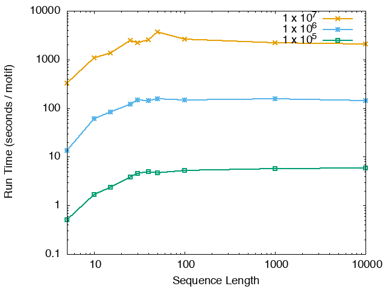
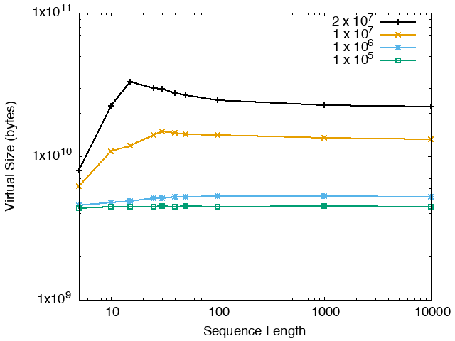
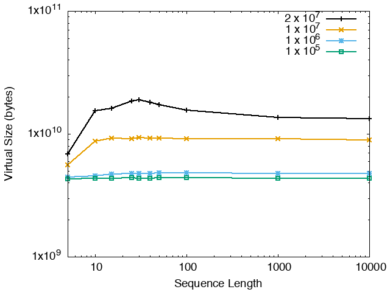
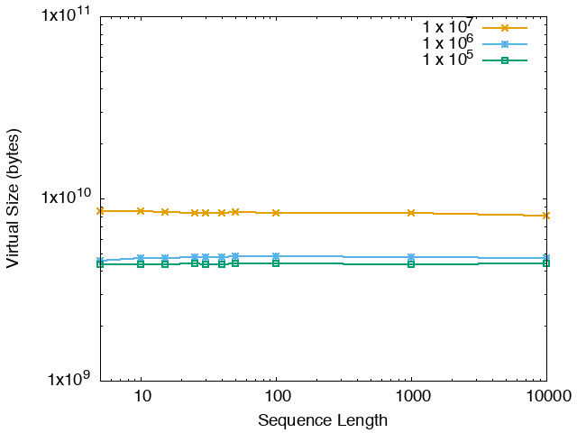

streme [options] --p <primary sequences>
The name of a file containing the primary (positive) sequences in FASTA format. The file must contain at least two valid sequences or STREME will reject it. Note that the command-line version of STREME does not attempt to detect the alphabet from the primary sequences, so you should specify it with the --dna, --rna, --protein or --alph options.
STREME writes its output to files in a directory named
streme_out, which it creates if necessary. You can change the
output directory using the --o or --oc options.
The directory will contain:
streme.html -
an HTML file that provides the results in an interactive, human-readable format
streme.txt -
a text file containing the motifs discovered by STREME in MEME format
sequences.tsv -
a TSV (tab-separated values)
file that lists the true- and false-positive sequences identified by STREME for each motif
streme.xml -
an XML file that provides the results in a format designed for machine processing
STREME gives each motif it discovers a name, which is a consensus sequence that approximately describes the motif, prefixed by a number from 1 to the number of motifs found, e.g., "1-CCACYAGT". Motif names are intended to be mnemonic only, and are not intended to be used for searching sequences for matches; to search for matches to STREME motifs, use a STREME output file as input to a motif scanning program such as FIMO and MAST.
Note: All options may be preceded by a single dash (-) instead of a double dash (--) if desired.
| Option | Parameter | Description | Default Behavior | |||||||||
|---|---|---|---|---|---|---|---|---|---|---|---|---|
| Output | ||||||||||||
| --text | Output the motifs discovered by STREME in MEME text format only to standard output. | The program behaves as if --oc streme_out had
been specified. |
||||||||||
| Objective Function | ||||||||||||
| --objfun | de| cd | This option is used to select the objective function that
STREME optimizes in searching for motifs.
|
STREME uses the Differential Enrichment (de) function. | |||||||||
| Control Sequences, Background Model and Hold-out Set | ||||||||||||
| --n | control sequences | The name of a file containing control (negative) sequences in FASTA format. The control sequences must be in the same sequence alphabet as the primary sequences. If the average length of the control sequences is longer than that of the primary sequences, STREME trims the control sequences so that both sets have the same average length. | If you do not provide control sequences, STREME creates them by shuffling a copy of each primary sequence, using a m-order shuffle (see next option). Shuffling also preserves the positions of non-core (e.g., ambiguous) characters in each sequence to avoid artifacts. | |||||||||
| --order | m | If you do not provide control sequences, STREME will do an
an m-order shuffle of each primary sequence to
to create control sequences. This preserves the frequencies of words of
length m+1 in each shuffled sequence.
Unless you specify a background model file (see --bfile, below),
STREME will also estimate an m-order Markov background model
from the control sequences (or the primary sequences if you do not provide
control sequences). STREME uses the fasta-get-markov
program with a total pseudocount of 1 to create the Markov model.
m must be in the range [0,..,5].
| STREME uses m=2 (DNA and RNA), and m=0 (Protein and Custom alphabets). | --bfile | file | Specify the source of a background model in Markov Background Model Format. STREME uses the m-order portion of the background model for log-likelihood scoring of motif sites, where m is as described for the --order option, above. | STREME estimates an m-order background model from the control sequences, or from the primary sequences if you do not provide control sequences. | |||||
| --kmer | k | [Deprecated: Use --order instead] Preserve the frequencies of words (k-mers) of this size when shuffling primary sequences to create control sequences. k must be in the range [1,..,6]. STREME also estimates a background model of order k-1 from the primary sequences for use in log-likelihood scoring of motif sites. | STREME preserves the frequencies of words of length 3 (DNA and RNA), and 1 (Protein and Custom alphabets), and constructs background models of order 2 (DNA and RNA), and order 0 (Protein and Custom). | |||||||||
| --hofract | hofract | The fraction of the primary and control sequences that STREME will randomly select
and hold out for accurately estimating the significance of motifs.
Note: If the hold-out set would contain fewer than 5 sequences, STREME does not create it, and the motif p-values will be inaccurate. Note: The letter frequencies in the final motifs reported by STREME are based on all primary sequences, including those in the hold-out set. |
STREME reserves 0.1 (10%) of the primary and control sequences for estimating the significance of motifs. | |||||||||
| --totallength | len | Restrict the maximum total length of the sequences used by STREME from the sequence file(s) to a total of at most len. The input sequences are first sorted alphabetically by sequence content, and then their order is randomized. (Potential) sequences are then assigned to the primary and hold-out sets. Then sequences are added in to the primary set in a the random order, skipping any potential sequence that would cause the total length of the primary set to exceed len times (1 - hofract). This is repeated for the hold-out set, not adding a sequence if the total length of the hold-out set would exceed len times hofract. | The total length of the input sequences is not limited. | |||||||||
| --seed | seed | Random seed for shuffling and sampling the hold-out set sequences (see above). | STREME uses a random seed of 0. | |||||||||
| Alphabet | ||||||||||||
| Number of Motifs | ||||||||||||
| --thresh | thresh | STREME will stop searching for motifs when too many consecutive motifs have p-values greater than thresh (or E-values greater than thresh if you specify option --evalue, below). For the definition of "too many", see option --patience, below. | 0.05 | |||||||||
| --evalue | Stop searching for motifs based on their E-values. | Stop searching for motifs based on their p-values. | ||||||||||
| --patience | patience | Stop searching for motifs when patience consecutive non-significant motifs have been found. (Can be overridden by the --nmotifs or --time options; see below.) | 3 | |||||||||
| --nmotifs | nmotifs | STREME will stop searching for motifs after finding nmotifs motifs. | STREME stops when too many consecutive, non-significant motifs have been found. | |||||||||
| --time | secs | STREME will stop searching for motifs if it has found at least one motif and it estimates that finding any more will cause the total running time to exceed secs seconds. | STREME stops when too many consecutive, non-significant motifs have been found. | |||||||||
| Motif Width | ||||||||||||
| --minw | minw | Search for motifs with a width ≥ minw. | Searches for motifs with a minimum width of 8. | |||||||||
| --maxw | maxw | Search for motifs with a width ≤ maxw. | Searches for motifs with a maximum width of 15. | |||||||||
| --w | w | Search for motifs with a width of w. Overrides --minw and --maxw. | See --minw and --maxw, above. | |||||||||
| Seed Evaluation and Refinement | ||||||||||||
| --neval | neval | The number of seed words of each width from 3 to maxw to evaluate for enrichment of approximate matches. | 25 | |||||||||
| --nref | nref | The number of seed words of each width from minw to maxw to convert to motifs and optimize using an iterative refinement algorithm. | 4 | |||||||||
| --niter | niter | The iterative refinement algorithm is run for niter iterations, or until convergence, which ever comes first. | 20 | |||||||||
| Misc | ||||||||||||
| --align | left | center | right | For the site positional distribution diagrams, align the sequences on their left ends (left), on their centers (center), or on their right ends (right). For visualizing motif distributions, center alignment is ideal for ChIP-seq and similar data; right alignment for sequences upstream of transcription start sites; left alignment for many proteins or 3' UTR sequences. | Align the sequences on their centers. | |||||||||
| --verbosity | 1|2|3|4|5 | A number that regulates the verbosity level of the output information messages. If set to 1 (quiet) then STREME will only output warning and error messages, whereas the other extreme 5 (dump) outputs lots of information intended for debugging. | The verbosity level is set to 2 (normal). | |||||||||
STREME searches for motifs by iterating the following five steps to until the selected stopping criterion is met. The stopping criteria are described in the "Number of Motifs" section, above.
STREME builds a generalized suffix tree that includes both the primary and control sequences (but not the hold-out set sequences). If the alphabet is complementable, STREME adds the reverse complement of each primary and control sequence to the tree as well. For the first round of STREME, the input sequences are used to build the tree. For subsequent rounds, the sequences from the last step (Step 5, below), with previous motifs erased, are used.
neval (default=25) most signficant words of each width,
STREME then uses the tree to count the number of approximate matches
to it, and computes its enrichment p-value.
(Note: With the Differential Enrichment objective function,
STREME will use the Binomial test instead of Fisher's exact test
if the primary and control sequences have different average
lengths. With the Central Distance objective function,
STREME computes the cumulative Bates distribution of the average distances of
the seed word from the centers of the sequences.)
neval (default=25) most signficant words of each width,
STREME then uses the tree to count the number of approximate matches
to it, and computes its enrichment p-value.
STREME converts each of the nref (default=4) most significant
seed words into a motif, and iteratively refines each motif, selecting the motif that
best discriminates the primary sequences from the control sequences.
At each iteration of refinement, the current motif and the (k-1)-order
background are used with the suffix tree to efficiently find the best
site in each sequence. The primary and control sequences are then sorted
by the log-likelihood score of their best site, and the score threshold
that optimizes the p-value of the statistical test
(which depends on the chosen objective function) is found.
The iteration ends by estimating a new version of the motif
from the single best site in each primary sequence whose
score is above the optimal threshold. This new motif is
used in the next refinement iteration. Refinement stops
when the p-value fails to improve, or when
niter (default=20) iterations have been performed.
STREME computes the statistical significance of the of the motif by using the motif and the optimal discriminative score threshold (based on the primary and control sequences) to classify the hold-out set sequences, and then applying the statistical test (Fisher's exact test, Binomial test, or the cumulative Bates distribution) to the classification. Classification is based on the best match to the motif in each sequence (on either strand when the alphabet is complementable). If the primary or control hold-out set would contain fewer than 5 sequences, STREME does not create a hold-out set, and the value of the statistical test will not be an accurate measure of the statistical significance of the motif. In that case STREME will label the test output as a 'score' rather than as a p-value. If there is a hold-out set, STREME also reports an E-value that accounts for the number of motifs tested by STREME. The E-value is the p-value multiplied by the number of motifs reported by STREME, and is an estimate of how many equally enriched (or better) motifs would be found in shuffled versions of the primary sequences.
STREME "erases" each of the sites of the best motif from both the primary and control sequences by converting the sites to the separator character. Only the positions in the site where the letter has a positive likelihood ratio are erased to allow some overlap of sites of different motifs.
The running time and memory usage of STREME depends on the total size of the sequences in its input, the length of the sequences, the alphabet of the sequences and the minimum and maximum motif widths. The following tables show the running times and memory usage for STREME on on different size datasets (of random sequences), as a function of the length of the sequences, on a 3.2 GHz Intel Core i7 processor with 16GB of memory. STREME was run using a single thread, and the motif width was the maximum allowed range: minimum = 5, maximum = 30. The total sizes of the sequences in the datasets from 100,000 (1 x 105) to 20,000,000 (2 x 107).
With very short sequences (length = 5), STREME is extremely fast, processing 4,000,000 DNA sequences in less than 100 seconds. The running time increases with sequence length, reaching a maximum for sequences around 30 long. With very long sequences, STREME is runs more quickly, with length 10,000 sequences taking approximately the same time per motif discovered as length 10 sequences. STREME runs about twice as slow on DNA sequences as on RNA sequences because STREME treats DNA sequences as double-stranded and RNA sequences as single-stranded. Because of the larger alphabet size, STREME runs about 5 times more slowly on protein sequences than on RNA sequences, which is the same factor as the ratio of the alphabet sizes (20/4). The running time of STREME with sequences over a custom alphabet will similarly be (roughly) proportional to the number of letters in the custom alphabet.
| STREME Running Time (seconds / motif) | ||
|---|---|---|
| DNA | RNA | Protein |
|  |  |  |
| STREME Virtual Memory Size (bytes) | ||
| DNA | RNA | Protein |
|  |  |  |